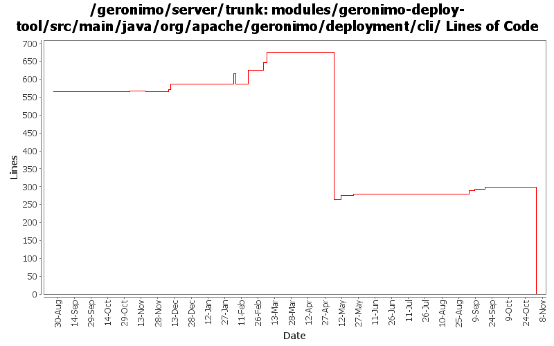

[root]/modules/geronimo-deploy-tool/src/main/java/org/apache/geronimo/deployment/cli

| Author | Changes | Lines of Code | Lines per Change |
|---|---|---|---|
| Totals | 114 (100.0%) | 723 (100.0%) | 6.3 |
| gdamour | 31 (27.2%) | 522 (72.2%) | 16.8 |
| djencks | 6 (5.3%) | 134 (18.5%) | 22.3 |
| dwoods | 4 (3.5%) | 32 (4.4%) | 8.0 |
| kevan | 38 (33.3%) | 16 (2.2%) | 0.4 |
| jlaskowski | 1 (0.9%) | 6 (0.8%) | 6.0 |
| rickmcguire | 5 (4.4%) | 5 (0.7%) | 1.0 |
| dain | 1 (0.9%) | 5 (0.7%) | 5.0 |
| akulshreshtha | 2 (1.8%) | 2 (0.3%) | 1.0 |
| vamsic007 | 1 (0.9%) | 1 (0.1%) | 1.0 |
| sppatel | 2 (1.8%) | 0 (0.0%) | 0.0 |
| prasad | 21 (18.4%) | 0 (0.0%) | 0.0 |
| jdillon | 2 (1.8%) | 0 (0.0%) | 0.0 |
GERONIMO-3565. Modules distributed amongst framework/modules and plugins
0 lines of code changed in 21 files:
GERONIMO-3481 Offline deployer throws BIND Exception when port 1099 is in use
o Change the scope of jaxws-deployer's dependency on webservices-common to runtime.
o Prevent offline deployer from stopping the onlineConfigStores as it will leave no stores for the offline deployer to work with.
1 lines of code changed in 1 file:
GERONIMO-2925 implement pluggable obscuring of passwords in plans etc
22 lines of code changed in 2 files:
avoid an NPE
3 lines of code changed in 1 file:
GERONIMO-3330 GERONIMO-3453 Use the new plugin schema Paul came up with. Use jaxb for geronimo-plugin xml handling. Modify the car-maven-plugin to generate geronimo-plugin.xml and explicitly specify the dependencies for the plan in pom.xml. This introduces several more jaxb libraries in lib which I hope can be removed again. Also the console plugin handling is barely working.
58 lines of code changed in 1 file:
GERONIMO-3246 Cleanup exception handling so stack traces for first failures are not discarded.
5 lines of code changed in 5 files:
GERONIMO-3183 Fix offline deployment in minimal configurations. Applied the second-half of the patch, which adds some improved diagnostics. Offline deployment still fails in the minimal assemblies....
12 lines of code changed in 2 files:
GERONIMO-1285 Deployer does not list all modules that have been stopped
Slight rework, to remove the extraneous updateStatus() calls when processing the childs.
Also updated StopCommand to display "Module <id> is already stopped" instead of treating it as a failure.
Rakesh, thanks for the patches.
14 lines of code changed in 1 file:
Refactor the various CLIs such that oprtions parsing and arguments are done prior to boot the
boot configuration.
* Add a geronimo-cli JAR containing all the classes to perform options and arguments parsing. It is included in the lib/ folder and added to the Class-Path manifest entry of the deployer.jar, server.jar and client.jar runnable JARs;
* Use commons-cli to perform the option parsing; and
* add support for an extra verbose level, -vvv, and remap the verbose level as follows: -v -> INFO, -vv -> DEBUG, -vvv -> TRACE.
This fixes GERONIMO-3059 - CLIs refactoring - options and arguments parsing should be done prior the boot of a Kernel to provide a quicker feedback to users if they are invalid
188 lines of code changed in 18 files:
GERONIMO-2609 - On linux and maybe other platform, the geronimo.out log file contains invalid characters
None of these messages are getting displayed in the latest 2.0 code, but cleaning up for completeness.
Changed println() to not use "/r", which is the invalid char in the 1.1.1 output.
Switched shutdown word "begun" to "started" to match the "Server shutdown completed" phrasing.
6 lines of code changed in 1 file:
GERONIMO-3011 Revert default Naming Port to 1099, and see if it is necessary to change it
1 lines of code changed in 1 file:
GERONIMO-3011 Change default RMINaming port to 1098
Added system property admin.disabled=true
Removed PluginBootstrap, it was used by Maven1 build
1 lines of code changed in 1 file:
GERONIMO-1418 allow nicknames for deployment targets
11 lines of code changed in 1 file:
GERONIMO-2900 improve output from list-modules command
40 lines of code changed in 1 file:
shutdown.jar now boots a kernel with a boot configuration defining boot
dependencies, a la deployer.jar, such that dependencies can be loaded
from the boot repository and no more from lib.
This fixes GERONIMO-2912 - Server can not be shutdown using bin\shutdown.
26 lines of code changed in 1 file:
Second attempt to change the way the online/offline deployers and the JSR88
deployment driver work. The first attempt was breaking the TCK amd the
eclipse plugin.
Online deployer, i.e. deployer.jar, boots a Kernel to load its dependencies,
e.g. geronimo-deploy-tool, and registers the available ModuleConfigurers with
the DeploymentManager.
ModuleConfigurers to be registered are loaded by the persistent configuration
list jsr88-configurer-config.xml.
In the case of an offline deployment, the online deployer starts the
offline-deployer configuration within the same Kernel. In turn, the
offline-deployer configuration starts a list of configurations to register
the available module builders.
Add a log4j configuration for the online deployer.
DeploymentFactoryBootstrapper is the new JSR88 deployment driver. It boots a
kernel; starts the configuration list jsr88-configurer-config.xml; retrieves
the "actual" DeploymentFactory implementation from the kernel; and delegates
to this retrieved imoplementation.
The JSR88 JAR driver is now named jsr88-deploymentfactory.jar.
This fixes:
* GERONIMO-2794 - Improve online deployer to register ModuleConfigurers from the repository; and
* GERONIMO-2767 - Minimize side effects of the offline deployer
119 lines of code changed in 4 files:
Revert deployer changes as they do break the Eclipse plugin and TCK.
I will investigate offline.
svn merge -r503370:503369 .
80 lines of code changed in 4 files:
Online deployer, i.e. deployer.jar, boots a Kernel to load its dependencies,
e.g. geronimo-deploy-tool, and registers the available ModuleConfigurers with
the DeploymentManager.
ModuleConfigurers to be registered are loaded by the persistent configuration
list jsr88-configurer-config.xml.
In the case of an offline deployment, the online deployer starts the
offline-deployer configuration within the same Kernel. In turn, the
offline-deployer configuration starts a list of configurations to register
the available module builders.
Add a log4j configuration for the online deployer.
This fixes:
* GERONIMO-2794 - Improve online deployer to register ModuleConfigurers from the repository; and
* GERONIMO-2767 - Minimize side effects of the offline deployer
109 lines of code changed in 4 files:
GERONIMO-2641 Add license headers to files. Thanks Jarek!
16 lines of code changed in 1 file:
GERONIMO-2549 NullPointerException when listing plugins on a bogus server.
Thanks for the patch Mark DeLaFranier
5 lines of code changed in 1 file:
GERONIMO-2537 Update the src headers in server/trunk/modules to be compliant with the new ASF src header and copyright policy (http://www.apache.org/legal/src-headers.html). I also did some cleanup of the src headers and tried to make them all a consistent format
0 lines of code changed in 37 files:
Partial fix for GERONIMO-2537 All Geronimo source files must be brought in line with the new ASF source header and copyright notice policy
The modules directory is supposed to be migrated. There're some issues with some files, but they'll be handled manually
6 lines of code changed in 1 file:
fix group id from geronimo to org.apache.geronimo.configs to fix starting of offline deployer
0 lines of code changed in 2 files:
Apply standard properties
0 lines of code changed in 2 files: